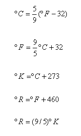

UNIDADES
DE MEDIDA DE TEMPERATURA
Las unidades de medida de la temperatura pueden ser absolutas y relativas.
Para la graduación de las escalas de temperatura se utilizan como puntos de referencia los puntos de congelación y de evaporación del agua.
En el Sistema Métrico Decimal, la unidad de medida de temperatura es el grado centígrado (º C), al punto de congelación le corresponde el 0 º C y 100 º C para el punto de evaparación del agua.
La escala Absoluta en éste Sistema es el grado Kelvin (º K), la graduación del cero absoluto se encuentra 273 º C por debajo del punto de congelación del agua.
En el Sistema Ingles, la unidad de medida de temperatura es el grado Farenheit (º F), al punto de congelación del agua le corresponde la graduación 32 º F y 212 ºF para el punto de ebullición.
La escala Absoluta en este sistema tiene como unidad de mediad de la temperatura el grado Rankine (º R), su cero absoluto se encuentra 460 º R, por debajo del punto de congelación del agua.
A continuación se muestra la relación entre las escalas de temperatura y sus equivalencias.
|  |
 |